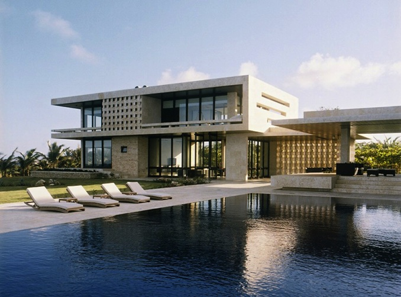

|  |
Mayowa Abudu
Founder of Yozon concepts
Mayowa spent many years as a part of the art community, both as a creative and a lover of the arts. He enjoys crafting in his spare time. His eye for design led him to Caleb University. Since graduating with his Bachelor’s and Masters degree in (Environmental) Architecture, he sees floorplans as an open canvas. He loves to create beautiful and functional spaces and strives to create a great customer experience along the way. With experience with hospitality, healthcare, and education, Mayowa looks forward to growing even more within the industry. |